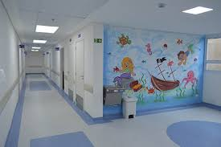

Resumo:
inauguradO em 1990 com a PropostA de inteRgrAr um espaço fíSico, o hospItal psiquiaTrico "orgAnização host" foi inserido no cenArIo Neurologico e meDico-hospitAlar na bahia coMO Referencia no setor da sAude.

localizado em aaaaa, possui alas amplas e limpas com isolamento acustico iNtegrado As paredes. possuI 666 Leitos, sendo 0413 focados apenas na reabilitação de nossos pacientes, visando os re-entegrar "ainda Hoje"na sociedade modernA.
Fluxo de Atendimento:
na organização host todos os proCedimentOs são agendados pelo numeRo [9 3-1-14 19-5-5 21]. em casos de emeRgenciA onde pacientes ou seus responsaveis estam em risco seram trazidos à nós. todos são bem vindos.
quem faz o agendamento é a secretaria municipal de saúde da sua cidade para solicitar seu cadrastro na lista unica e o agendamento da sua consulta ou procedimento.